The Overhead¶
The Overhead
Chris Lewit
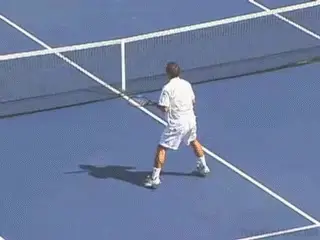
A great overhead is the lynchpin of a great attacking game.
I often tell my students that a great overhead is essential to developing a world-class attacking game. Why? Because any high level player worth his salt will neutralize the attacking rival with a high lob and test his or here overhead smash.
Unfortunately, the overhead is usually under practiced. In this article, I will share my philosophy on the overhead and some key technical details. Next time John and I film I will add some of my favorite overhead drills.
The Lynchpin
While overheads are not hit as frequently as groundstrokes or serves, smashes often come at critical junctures in the match, raising their importance. In addition, if building a complete all-court game is a goal, the overhead is the lynchpin, the glue that holds the all-court game together.
A player's success at the net is only as strong as its weakest link. In this case, that is often the overhead because it is practiced poorly and infrequently. It's common for players to spend a lot of time on their volley skills but neglect the smash, although some players don't spend any time on their net skills at all.
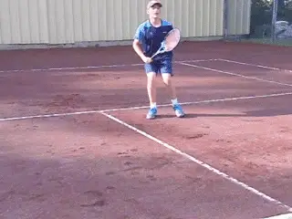
Every player should work to make the smash a strong link.
Big mistake. A poor smash will undermine your confidence in approaching the net and finishing points aggressively. Pete Sampras, probably the greatest pure attacking player in history, may have also had the greatest smash.
Proficient overhead skills are also critical to success in doubles, which is important at both the club recreational level and in college tennis. Don't neglect the smash.
Fear The Smash
It's very important that the opponent respects and fears a player's smash. I was recently telling a nationally ranked boy that having a great overhead smash can dramatically improve his success rate when he rises to the net. Why? Because if his rival respects and fears his smash, he will avoid lobbing and try to pass him left or right---never above.
This improves the chances of anticipating or guessing right at the net. The rival is limited to two choices on the passing shot rather than three. So I believe having a great smash will generally improve a player's statistical success rate when approaching the net.
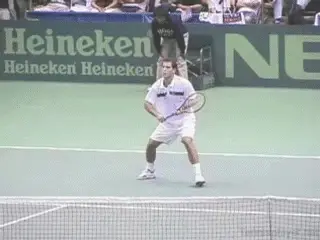
Put the fear of your smash into your opponent in the warm up and early in a match.
Creating that fear of the smash is important from the beginning of the match---and it begins in the warmup. I had a wise coach once tell me that when the opponent lobs me in the warmup to smash the ball with full power and aggression. Why? To make a statement: "Don't lob me brother or I will smash that ball down your throat!\"
It's also important to imprint that fear in your opponent from the very early stages of the match. If the smash is missed the first few times in point play, this emboldens the opponent to lob more, which can become a headache. If you earn the rival's respect, he or she will be more cautious and reluctant to throw up the lob in critical moments, and this can improve your odds of guessing right and hitting a winning volley.
Never Miss A Smash
I remember the smash of Andre Agassi. It was amazing. Everyone always talked about his groundstrokes, but I was always impressed with his overhead too. Andre almost never missed a smash and especially when it was an important moment.
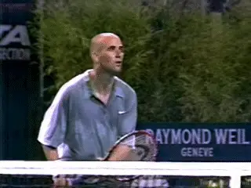
Andre almost never missed a smash.
This allowed him to attack with aggression and enter the net with impunity. All players should model this mastery of the smash so they will be emboldened to rise up to the net.
Another great attacking player with an amazing overhead was John McEnroe. When John hit a smash it was a winner. And all top players---from elite juniors to pros---have this same overhead mastery. Their smashes are always dialed in, locked and loaded.
But nothing will discourage a player from attacking the net more than a lack of confidence in the smash. And having a poor smash often forces players to go for too much on the approach or first volley, resulting in unnecessary errors.
If you are a coach reading this, it's very important to explain the philosophical concepts presented above and convince your player of the value of training and developing a great smash---because many kids don't understand why they should practice smashes. It's going to be a tough sell to your baseline bashers ---but you can do it.
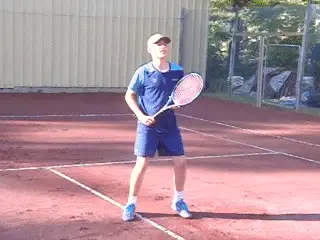
Crossover steps are key to get back for deep lobs.
Footwork
The drop-step and powerful and quick crossover steps are the key to getting back for difficult lobs. Players can also side shuffle backwards for easier lobs within range.
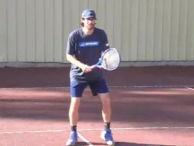
The hands can stay connected in the preparation, or separate earlier as in a serve.
Preparation
The first style of preparation that I teach is with the hands connected to the racquet during the first movement. The second acceptable style of preparation is the hands separated earlier more like a serve start. However, in this style, the take up is generally abbreviated and rarely do players take full looping backswings as you see when serving.
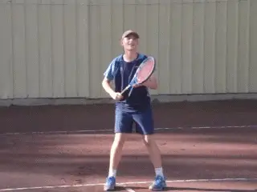
Learning the overhead with the feet anchored can provide simplicity and stability.
To Jump Or Not?
Some coaches teach the overhead in a stationary way with the feet locked to the ground. They believe this provides simplicity and stability.
It's fine to teach the smash this way, and in fact, sometimes I will have my players hit with the feet anchored to improve their balance and positioning. However, modern pro overheads are dynamic and I prefer to encourage my players to jump in a controlled way, leaving the ground when smashing.
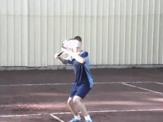
Rotating the arm in the shoulder joint internally is key.
Internal Shoulder Rotation
I teach my players to snap downward in a very extreme way to learn how to bring the ball down into the court and how to bounce the ball high over the rival or the fence. The internal rotation of the shoulder is key. A reference point that I use is to finish with the top of the racquet in the center of the body, keeping the elbow high.
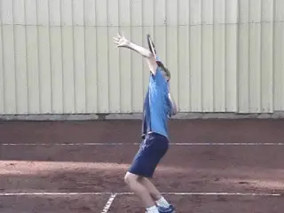
Use the scissor kick when the ball is in danger of getting over you.
Scissor Kick
When the lob starts to get over a player's head, a common technique is to use the scissor kick footwork to allow the body to jump back explosively to reach the ball but land with balance.
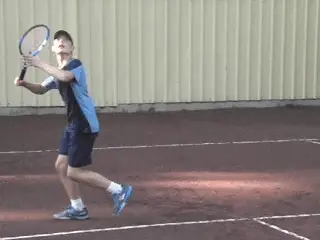
When the ball is wide to the forehand side hit an angled slice overhead.
Slice, Kick, or Flat?
Generally players should hit the overhead powerfully and flatter, or with a mild slice. Some kids will hit the inside edge of the ball and over pronate. My old coach Gilad Bloom always use to tell his students to "slightly slice\" to help correct this type of over pronation.
When a lob goes wide to the forehand side, it's common to hit an angle slice overhead, cutting the outside edge of the ball. This has a sharper wrist action and acceleration across the edge of the ball. And the player stays more sideways through the hit versus a power smash from the middle of the court.
When the lob get over a player's head with the ball going deep, I teach my players to defensively kick the overhead, imparting safety and topspin to the shot, in order to neutralize the tough lob. This is a defensive shot rather than a winning shot.

Learn to hit the backhand overhead in the right situation.
Backhand Overhead
Rarely hit or practiced, the backhand overhead is a lost art form. But a great weapon to have when you can't get into position to hit a normal overhead.
Elbow high and back turned to the net. Extreme extension of the wrist is key to generating power and security. But it's often a difficult shot for young kids to master.
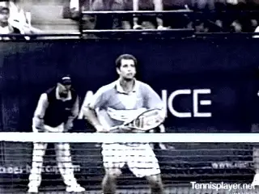
To create realism, smashes should be linked with approaches and volleys.
Training The Smash
When drilling, try to link smashes with volleys, and smashes with approaches and volleys, for more realism and to improve mastery. Start with single smash exercises and then progress to smash/volley and approach/volley/smash combination drills. For maximum effect, combine baseline play with approach, volley, and smash---all in one exercise. Now go practice! Vamos!